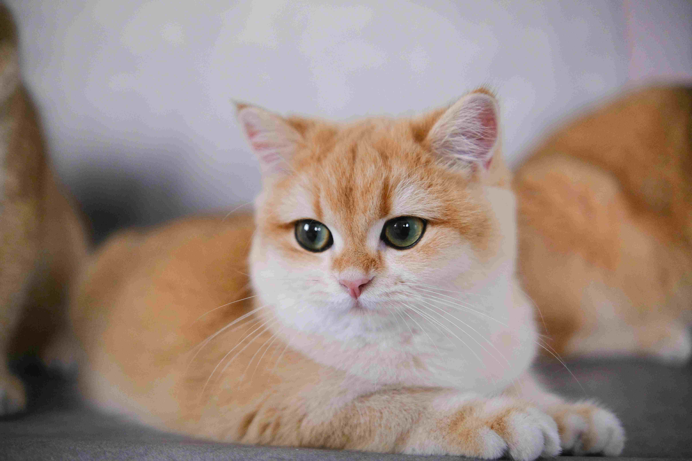
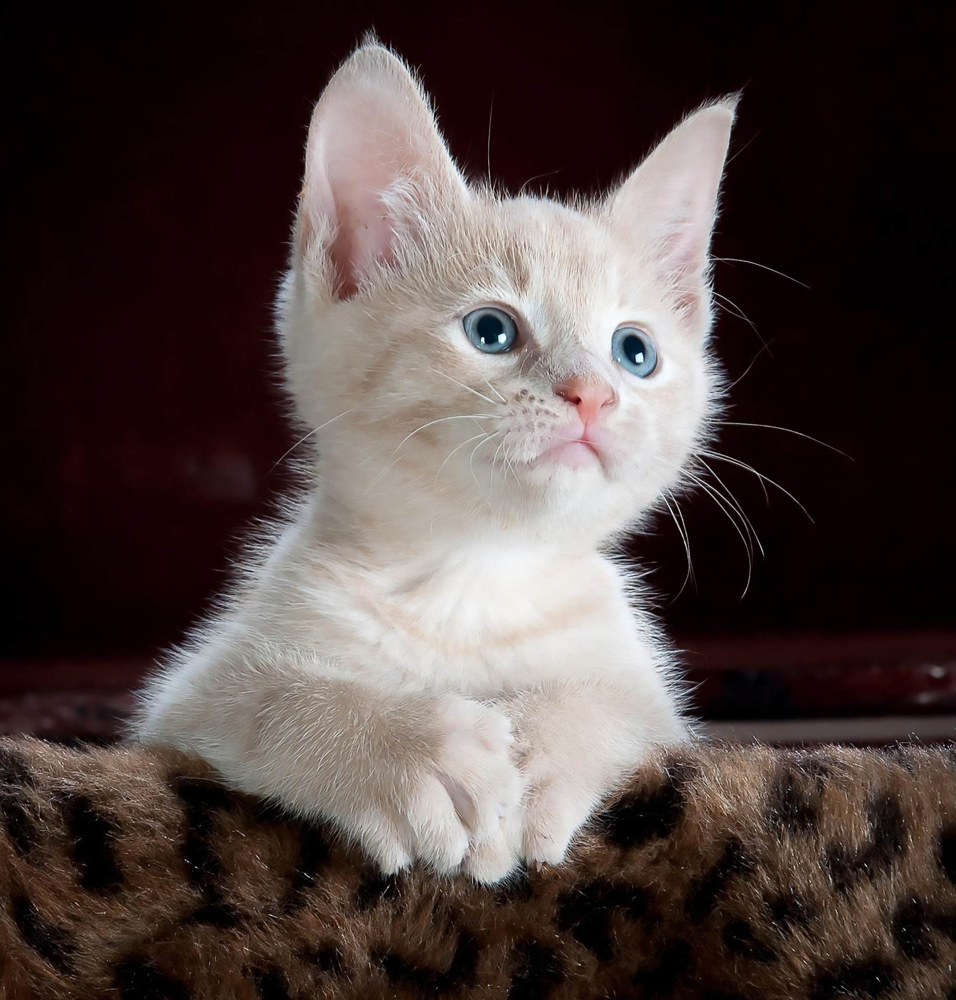
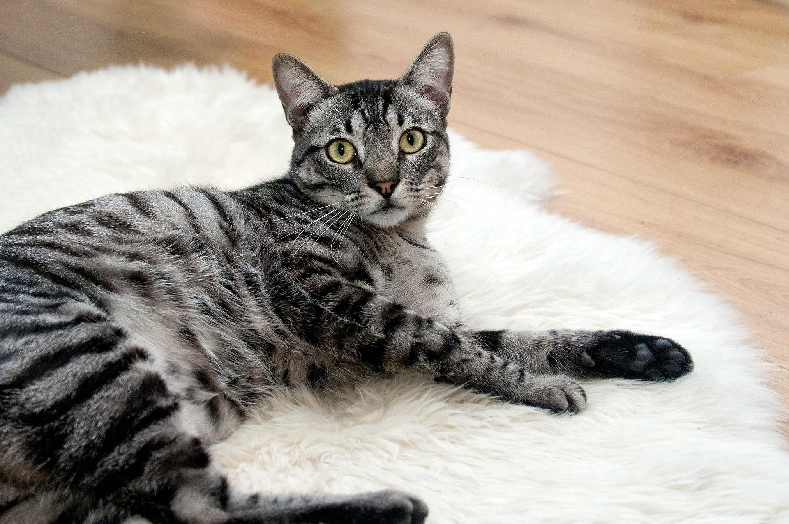
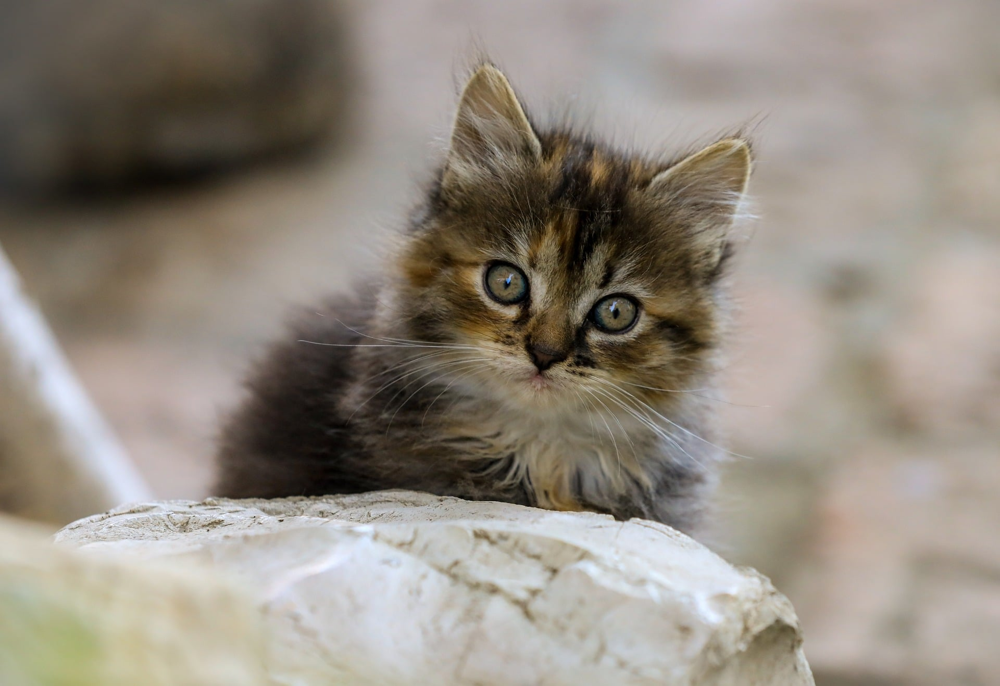
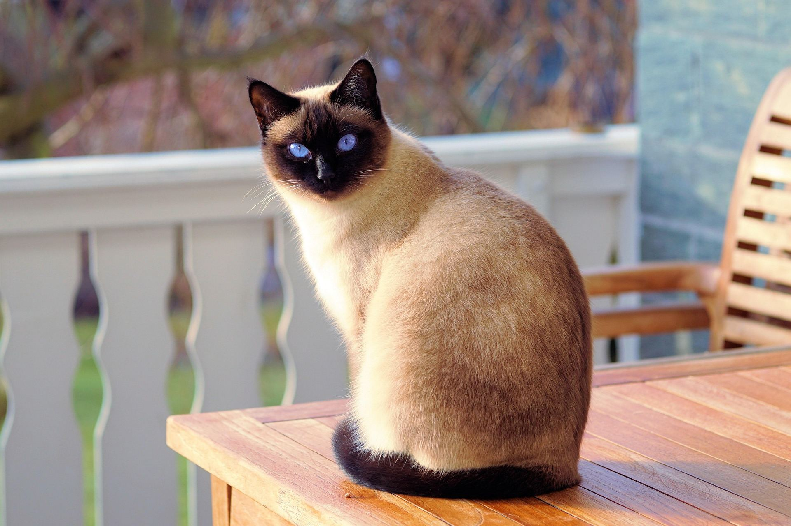
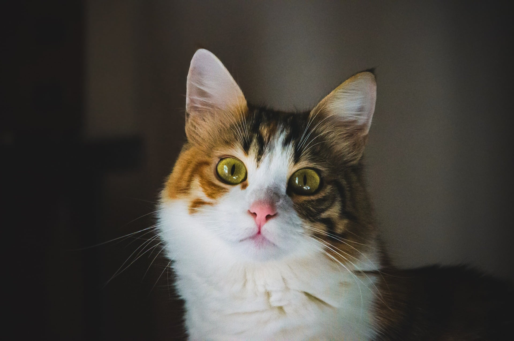

Cats Bio
Store Manager✨
| Name | Daisy |
|---|---|
| Age | 3 Years Old |
| Traits | Gentle Lap Cat & Nap Enthusiast |
| Bio | Daisy is our resident snooze master. She loves quiet lap sessions, warm sunlight patches, and soft head scratches behind her left ear. |


Luna
Playful Feather Hunter & Curious Explorer

Gravy
Inseparable Cuddle Monsters

Oliver
Calm Observer & Sofa Companion

Cleo
Sassy Socialite & Treat Connoisseur

Barnaby
Sweet Senior & Purr Machine

Bella
Sweet Daydreamer & Quiet Shadow